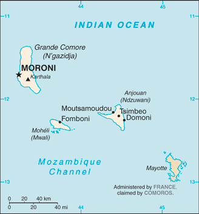
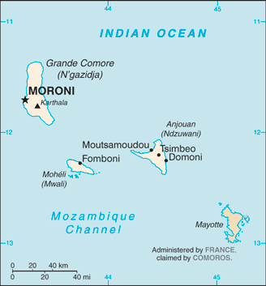

Africa :: COMOROS
Introduction :: COMOROS
-
The archipelago of the Comoros in the Indian Ocean, composed of the islands of Mayotte, Anjouan, Moheli, and Grand Comore declared independence from France on 6 July 1975. France did not recognize the independence of Mayotte, which remains under French administration. Since independence, Comoros has endured political instability through realized and attempted coups. In 1997, the islands of Anjouan and Moheli declared independence from Comoros. In 1999, military chief Col. AZALI Assoumani seized power of the entire government in a bloodless coup; he initiated the 2000 Fomboni Accords, a power-sharing agreement in which the federal presidency rotates among the three islands, and each island maintains its local government. AZALI won the 2002 federal presidential election as president of the Union of the Comoros from Grand Comore Island, which held the first five-year term. AZALI stepped down in 2006 and President Ahmed Abdallah Mohamed SAMBI was elected to office as president from Anjouan. In 2007, Mohamed BACAR effected Anjouan's de-facto secession from the Union of the Comoros, refusing to step down when Comoros' other islands held legitimate elections in July. The African Union (AU) initially attempted to resolve the political crisis by applying sanctions and a naval blockade to Anjouan, but in March 2008 the AU and Comoran soldiers seized the island. The island's inhabitants generally welcomed the move. In May 2011, Ikililou DHOININE won the presidency in peaceful elections widely deemed to be free and fair. In closely contested elections in 2016, former President AZALI Assoumani won a second term, when the rotating presidency returned to Grande Comore.
Geography :: COMOROS
-
Southern Africa, group of islands at the northern mouth of the Mozambique Channel, about two-thirds of the way between northern Madagascar and northern Mozambique12 10 S, 44 15 EAfricatotal: 2,235 sq kmland: 2,235 sq kmwater: 0 sq kmcountry comparison to the world: 180slightly more than 12 times the size of Washington, DC0 km340 kmterritorial sea: 12 nmexclusive economic zone: 200 nmtropical marine; rainy season (November to May)volcanic islands, interiors vary from steep mountains to low hillsmean elevation: NAelevation extremes: lowest point: Indian Ocean 0 mhighest point: Karthala 2,360 mfishagricultural land: 84.4%arable land 46.7%; permanent crops 29.6%; permanent pasture 8.1%forest: 1.4%other: 14.2% (2011 est.)1.3 sq km (2012)the capital city of Maroni, located on the western side of the island of Grande Comore, is the country's largest city; however, of the three islands that comprise Comoros, it is Anjouan that is the most densely populatedcyclones possible during rainy season (December to April); volcanic activity on Grand Comorevolcanism: Karthala (2,361 m) on Grand Comore Island last erupted in 2007; a 2005 eruption forced thousands of people to be evacuated and produced a large ash cloudsoil degradation and erosion results from crop cultivation on slopes without proper terracing; deforestationparty to: Biodiversity, Climate Change, Climate Change-Kyoto Protocol, Desertification, Endangered Species, Hazardous Wastes, Law of the Sea, Ozone Layer Protection, Ship Pollution, Wetlandssigned, but not ratified: none of the selected agreementsimportant location at northern end of Mozambique Channel
People and Society :: COMOROS
-
808,080 (July 2017 est.)country comparison to the world: 163noun: Comoran(s)adjective: ComoranAntalote, Cafre, Makoa, Oimatsaha, SakalavaArabic (official), French (official), Shikomoro (official; a blend of Swahili and Arabic) (Comorian)Sunni Muslim 98%, other (including Shia Muslim, Roman Catholic, Jehovah's Witness, Protestant) 2%note: Islam is the state religionComoros’ population is a melange of Arabs, Persians, Indonesians, Africans, and Indians, and the much smaller number of Europeans that settled on the islands between the 8th and 19th centuries, when they served as a regional trade hub. The Arab and Persian influence is most evident in the islands’ overwhelmingly Muslim majority – about 98% of Comorans are Sunni Muslims. The country is densely populated, averaging nearly 350 people per square mile, although this varies widely among the islands, with Anjouan being the most densely populated.Given the large share of land dedicated to agriculture and Comoros’ growing population, habitable land is becoming increasingly crowded. The combination of increasing population pressure on limited land and resources, widespread poverty, and poor job prospects motivates thousands of Comorans each year to attempt to illegally migrate using small fishing boats to the neighboring island of Mayotte, which is a French territory. The majority of legal Comoran migration to France came after Comoros’ independence from France in 1975, with the flow peaking in the mid-1980s.At least 150,000 to 200,000 people of Comoran citizenship or descent live abroad, mainly in France, where they have gone seeking a better quality of life, job opportunities, higher education (Comoros has no universities), advanced health care, and to finance elaborate traditional wedding ceremonies (aada). Remittances from the diaspora are an economic mainstay, in 2013 representing approximately 25% of Comoros’ GDP and significantly more than the value of its exports of goods and services (only 15% of GDP). Grand Comore, Comoros’ most populous island, is both the primary source of emigrants and the main recipient of remittances. Most remittances are spent on private consumption, but this often goes toward luxury goods and the aada and does not contribute to economic development or poverty reduction. Although the majority of the diaspora is now French-born with more distant ties to Comoros, it is unclear whether they will sustain the current level of remittances.0-14 years: 39.35% (male 158,516/female 159,491)15-24 years: 19.53% (male 76,425/female 81,393)25-54 years: 32.91% (male 126,279/female 139,659)55-64 years: 4.27% (male 15,375/female 19,133)65 years and over: 3.94% (male 14,605/female 17,204) (2017 est.)total dependency ratio: 75.5youth dependency ratio: 70.5elderly dependency ratio: 5.1potential support ratio: 19.7 (2015 est.)total: 19.9 yearsmale: 19.2 yearsfemale: 20.5 years (2017 est.)country comparison to the world: 1941.64% (2017 est.)country comparison to the world: 6726.1 births/1,000 population (2017 est.)country comparison to the world: 487.2 deaths/1,000 population (2017 est.)country comparison to the world: 124-2.4 migrant(s)/1,000 population (2017 est.)country comparison to the world: 169the capital city of Maroni, located on the western side of the island of Grande Comore, is the country's largest city; however, of the three islands that comprise Comoros, it is Anjouan that is the most densely populatedurban population: 28.5% of total population (2017)rate of urbanization: 2.71% annual rate of change (2015-20 est.)MORONI (capital) 56,000 (2014)at birth: 1.03 male(s)/female0-14 years: 0.99 male(s)/female15-24 years: 0.94 male(s)/female25-54 years: 0.9 male(s)/female55-64 years: 0.8 male(s)/female65 years and over: 0.88 male(s)/femaletotal population: 0.94 male(s)/female (2016 est.)24.6 yearsnote: median age at first birth among women 25-29 (2012 est.)335 deaths/100,000 live births (2015 est.)country comparison to the world: 38total: 60 deaths/1,000 live birthsmale: 70.3 deaths/1,000 live birthsfemale: 49.4 deaths/1,000 live births (2017 est.)country comparison to the world: 18total population: 64.6 yearsmale: 62.3 yearsfemale: 67 years (2017 est.)country comparison to the world: 1823.34 children born/woman (2017 est.)country comparison to the world: 4619.4% (2012)6.7% of GDP (2014)country comparison to the world: 882.2 beds/1,000 population (2006)improved:urban: 92.6% of populationrural: 89.1% of populationtotal: 90.1% of populationunimproved:urban: 7.4% of populationrural: 10.9% of populationtotal: 9.9% of population (2015 est.)improved:urban: 48.3% of populationrural: 30.9% of populationtotal: 35.8% of populationunimproved:urban: 51.7% of populationrural: 69.1% of populationtotal: 64.2% of population (2015 est.)<.1% (2016 est.)<200 (2016 est.)<100 (2016 est.)7.8% (2016)country comparison to the world: 15716.9% (2012)country comparison to the world: 395.1% of GDP (2014)country comparison to the world: 15definition: age 15 and over can read and writetotal population: 77.8%male: 81.8%female: 73.7% (2015 est.)total: 11 yearsmale: 11 yearsfemale: 11 years (2014)
Government :: COMOROS
-
conventional long form: Union of the Comorosconventional short form: Comoroslocal long form: Udzima wa Komori (Comorian); Union des Comores (French); Jumhuriyat al Qamar al Muttahidah (Arabic)local short form: Komori (Comorian); Comores (French); Juzur al Qamar (Arabic)etymology: name derives from the Arabic designation "Juzur al Qamar" meaning "Islands of the Moon"federal presidential republicname: Moronigeographic coordinates: 11 42 S, 43 14 Etime difference: UTC+3 (8 hours ahead of Washington, DC, during Standard Time)3 islands and 4 municipalities*; Anjouan (Ndzuwani), Domoni*, Fomboni*, Grande Comore (N'gazidja), Moheli (Mwali), Moroni*, Moutsamoudou*6 July 1975 (from France)Independence Day, 6 July (1975)history: previous 1996; latest ratified 23 December 2001amendments: proposed by the president of the union or supported by at least one-third of the Assembly of the Union membership; passage requires approval by at least two-thirds majority of the total Assembly membership and approval by at least two-thirds of the membership of the Island Councils, or approval in a referendum; amended 2009, 2014 (2017)mixed legal system of Islamic religious law, the French civil code of 1975, and customary lawhas not submitted an ICJ jurisdiction declaration; accepts ICCt jurisdictioncitizenship by birth: nocitizenship by descent only: at least one parent must be a citizen of the Comorosdual citizenship recognized: noresidency requirement for naturalization: 10 years18 years of age; universalchief of state: President AZALI Assoumani(since 26 May 2016); note - the president is both chief of state and head of governmenthead of government: President AZALI Assoumani (since 26 May 2016)cabinet: Council of Ministers appointed by the presidentelections/appointments: the Union presidency rotates among the 3 islands; president directly elected by simple majority popular vote in 2 rounds for a single nonrenewable 5-year term (in the first round or primary, 3 candidates with the highest vote count by voters on the island concerned compete in the second round; second round winner determined by simple majority vote by voters on all 3 islands; election last held on 21 February 2016 and second round held 10 April 2016 (next to be held in 2021); note - in addition to the Union president, each island elects its own presidentelection results: AZALI Assoumani elected president in the second round of voting by a plurality; percent of vote in first round - Mohamed Ali SOILIHI 17.6%, Mouigni BARAKA 15.1%, AZALI Assoumani 15.0%, Fahmi Said IBRAHIM 14.5%; percent of vote in second round - AZALI Assoumani 41.0%, Mohamed Ali SOILIHI 39.9%; Mouigni BARAKA 19.1%description: unicameral Assembly of the Union (33 seats; 24 members directly elected by absolute majority vote in 2 rounds if needed and 9 members indirectly elected by the 3 island assemblies; members serve 5-year terms)elections: last held on 25 January 2015 with a runoff on 22 February 2015 (next to be held in 2020)election results: percent of vote by party - UPDC 29.1%, PJ 20.5%, RDC 21.3%, other 29.1%; seats by party - UPDC 8, PJ 7, RDC 2, CRC 2, RADHI 1, PEC 1, independents 3; note - in addition 9 seats will be filled by nominations from the 3 island assemblieshighest court(s): Supreme Court or Cour Supreme (consists of 7 judges); Constitutional Court (consists of 8 members)judge selection and term of office: Supreme Court judges - 2 selected by the president of the Union, 2 by the Assembly of the Union, and 1 each by the 3 island councils; judges appointed for life; Constitutional Court members appointed - 1 by the president, 1 each by the 3 vice presidents, 1 by the Assembly, and 1 each by the island executives; all members serve 6-year renewable termssubordinate courts: Court of Appeals (in Moroni); Tribunal de premiere instance; island village (community) courts; religious courtsConvention for the Renewal of the Comoros or CRC [AZALI Assoumani]Democratic Rally of the Comoros or RDC [Mouigni BARAKA]Juwa Party or PJ [Ahmed Abdallah SAMBI]Party for the Comorian Agreement (Partie Pour l'Entente Commorienne) or PEC [Fahmi Said IBRAHIM]Rally for an Alternative of Harmonious and Integrated Development or RADHI [Abdou SOEFO]Rally with a Development Intiiative for Enlightened Youth or RIDJA [Said LARIFOU]Union for the Development of the Comoros or UPDC [Mohamed HALIFA]Federation Comorienne des Consommateurs or FCC [Mohamed Said Abdallah MCHANGAMA]Mouvement des Entreprises comorienne or MODEC [Faharate HOUSSEIN]Union des Chambres de Commerce et de l'Industrie et de l'Agriculture or UCCIA [Ahmed Ali BAZI]Confederation des Travailleurs Comoriens or CTC [Salim SOULAIMANA]other: environmentalistsACP, AfDB, AMF, AOSIS, AU, CAEU (candidates), COMESA, FAO, FZ, G-77, IBRD, ICAO, ICCt, ICRM, IDA, IDB, IFAD, IFC, IFRCS, ILO, IMF, IMO, IMSO, InOC, Interpol, IOC, IOM, ITSO, ITU, ITUC (NGOs), LAS, MIGA, NAM, OIC, OIF, OPCW, UN, UNCTAD, UNESCO, UNIDO, UPU, WCO, WHO, WIPO, WMO, WTO (observer)chief of mission: Ambassador Soilihi Mohamed SOILIHI (since 18 November 2014)chancery: Mission to the US, 866 United Nations Plaza, Suite 418, New York, NY 10017telephone: [1] (212) 750-1637FAX: [1] (212) 750-1657the US does not have an embassy in Comoros; the US Ambassador to Madagascar is accredited to Comorosfour equal horizontal bands of yellow (top), white, red, and blue, with a green isosceles triangle based on the hoist; centered within the triangle is a white crescent with the convex side facing the hoist and four white, five-pointed stars placed vertically in a line between the points of the crescent; the horizontal bands and the four stars represent the four main islands of the archipelago - Mwali, N'gazidja, Ndzuwani, and Mahore (Mayotte - department of France, but claimed by Comoros)note: the crescent, stars, and color green are traditional symbols of Islamfour stars and crescent; national colors: green, whitename: "Udzima wa ya Masiwa" (The Union of the Great Islands)lyrics/music: Said Hachim SIDI ABDEREMANE/Said Hachim SIDI ABDEREMANE and Kamildine ABDALLAHnote: adopted 1978
Economy :: COMOROS
-
One of the world's poorest countries, the Comoros is made up of three islands that are hampered by inadequate transportation links, a young and rapidly increasing population, and few natural resources. The low educational level of the labor force contributes to a subsistence level of economic activity and a heavy dependence on foreign grants and technical assistance. Agriculture, including fishing, hunting, and forestry, accounts for 50% of GDP, employs 80% of the labor force, and provides most of the exports. Export income is heavily reliant on the three main crops of vanilla, cloves, and ylang ylang (perfume essence); and the Comoros' export earnings are easily disrupted by disasters such as fires and extreme weather. Despite agriculture’s importance to the economy, the country imports roughly 70% of its food; rice, the main staple, accounts for the bulk of imports. Remittances from about 300,000 Comorans contribute about 25% of the country’s GDP.The new government, elected in mid-2016, will be challenged to provide basic services, upgrade education and technical training, privatize commercial and industrial enterprises, improve health services, diversify exports, promote tourism, and reduce the high population growth rate. Recurring political instability, sometimes initiated from outside the country, has inhibited growth. In late 2015, Saudi Arabia provided a large budget grant to the Comorian Government, allowing arrears to be cleared and resulting in an overall fiscal surplus for 2016. The government has moved to improve revenue mobilization, reduce expenditures, and improve electricity access.$1.259 billion (2016 est.)$1.217 billion (2015 est.)$1.191 billion (2014 est.)note: data are in 2016 dollarscountry comparison to the world: 200$613 million (2016 est.)2.2% (2016 est.)1% (2015 est.)2% (2014 est.)country comparison to the world: 128$1,500 (2016 est.)$1,500 (2015 est.)$1,600 (2014 est.)note: data are in 2016 dollarscountry comparison to the world: 21810.9% of GDP (2016 est.)18.9% of GDP (2015 est.)10.6% of GDP (2014 est.)country comparison to the world: 147household consumption: 102%government consumption: 19.2%investment in fixed capital: 6.6%investment in inventories: 5.2%exports of goods and services: 18%imports of goods and services: -51% (2016 est.)agriculture: 49.7%industry: 11.9%services: 38.4% (2016 est.)vanilla, cloves, ylang-ylang (perfume essence), coconuts, bananas, cassava (manioc)fishing, tourism, perfume distillation-0.4% (2016 est.)country comparison to the world: 161278,500 (2016 est.)country comparison to the world: 166agriculture: 80%industry and services: 20% (1996 est.)6.5% (2014 est.)country comparison to the world: 8544.8% (2004 est.)lowest 10%: 0.9%highest 10%: 55.2% (2004)revenues: $142.8 millionexpenditures: $179.2 million (2016 est.)23% of GDP (2016 est.)country comparison to the world: 130-5.9% of GDP (2016 est.)country comparison to the world: 16826.3% of GDP (2016 est.)25.2% of GDP (2015 est.)country comparison to the world: 171calendar year1.8% (2016 est.)1.3% (2015 est.)country comparison to the world: 1191.93% (31 December 2010)2.21% (31 December 2009)country comparison to the world: 11710.5% (31 December 2016 est.)10.5% (31 December 2015 est.)country comparison to the world: 76$180.5 million (31 December 2016 est.)$169 million (31 December 2015 est.)country comparison to the world: 185$268.8 million (31 December 2016 est.)$251.7 million (31 December 2015 est.)country comparison to the world: 190$183.9 million (31 December 2016 est.)$142.6 million (31 December 2015 est.)country comparison to the world: 185$-62 million (2016 est.)$3.51 million (2015 est.)country comparison to the world: 67$17.9 million (2016 est.)$16.95 million (2015 est.)country comparison to the world: 215vanilla, ylang-ylang (perfume essence), clovesFrance 25.6%, South Korea 15%, Germany 11.8%, India 10.4%, Singapore 4.4%, Russia 4.2%, Mauritius 4.1% (2016)$189 million (2016 est.)$184.9 million (2015 est.)country comparison to the world: 207rice and other foodstuffs, consumer goods, petroleum products, cement and construction materials, transport equipmentUAE 29.5%, France 21.2%, China 11.3%, Pakistan 7.3%, Madagascar 6.2%, India 4.7% (2016)$132 million (31 December 2016 est.)$133.5 million (31 December 2015 est.)country comparison to the world: 192Comoran francs (KMF) per US dollar -444.76 (2016 est.)444.76 (2015 est.)443.6 (2014 est.)370.81 (2013 est.)382.9 (2012 est.)
Energy :: COMOROS
-
population without electricity: 200,000electrification - total population: 69%electrification - urban areas: 89%electrification - rural areas: 62% (2013)54 million kWh (2015 est.)country comparison to the world: 20650.22 million kWh (2015 est.)country comparison to the world: 2040 kWh (2016 est.)country comparison to the world: 1220 kWh (2016 est.)country comparison to the world: 13526,000 kW (2015 est.)country comparison to the world: 20496.2% of total installed capacity (2015 est.)country comparison to the world: 490% of total installed capacity (2015 est.)country comparison to the world: 693.8% of total installed capacity (2015 est.)country comparison to the world: 1310% of total installed capacity (2015 est.)country comparison to the world: 1760 bbl/day (2016 est.)country comparison to the world: 1200 bbl/day (2014 est.)country comparison to the world: 1070 bbl/day (2014 est.)country comparison to the world: 1110 bbl (1 January 2017 es)country comparison to the world: 1200 bbl/day (2014 est.)country comparison to the world: 1291,300 bbl/day (2015 est.)country comparison to the world: 2020 bbl/day (2014 est.)country comparison to the world: 1431,350 bbl/day (2014 est.)country comparison to the world: 1970 cu m (2013 est.)country comparison to the world: 1210 cu m (2013 est.)country comparison to the world: 1690 cu m (2013 est.)country comparison to the world: 860 cu m (2013 est.)country comparison to the world: 1090 cu m (1 January 2014 es)country comparison to the world: 127200,000 Mt (2013 est.)country comparison to the world: 201
Communications :: COMOROS
-
total subscriptions: 13,049subscriptions per 100 inhabitants: 2 (July 2016 est.)country comparison to the world: 178total: 454,213subscriptions per 100 inhabitants: 57 (July 2016 est.)country comparison to the world: 173general assessment: sparse system of microwave radio relay and HF radiotelephone communication stationsdomestic: fixed-line connections only about 2 per 100 persons; mobile cellular usage over 55 per 100 persons; two companies, Comoros Telecom and Telma, provide domestic and international mobile service and wireless data.international: country code - 269; landing point for the EASSy fiber-optic submarine cable system connecting East Africa with Europe and North America; HF radiotelephone communications to Madagascar and Reunion (2017)national state-owned TV station and a TV station run by Anjouan regional government; national state-owned radio; regional governments on the islands of Grande Comore and Anjouan each operate a radio station; a few independent and small community radio stations operate on the islands of Grande Comore and Moheli, and these two islands have access to Mayotte Radio and French TV (2007).kmtotal: 63,084percent of population: 7.9% (July 2016 est.)country comparison to the world: 182
Transportation :: COMOROS
-
number of registered air carriers: 2inventory of registered aircraft operated by air carriers: 9 (2015)D6 (2016)4 (2013)country comparison to the world: 186total: 42,438 to 3,047 m: 1914 to 1,523 m: 3 (2017)total: 880 kmpaved: 673 kmunpaved: 207 km (2002)country comparison to the world: 188total: 149by type: bulk carrier 16, cargo 83, carrier 5, chemical tanker 5, container 2, passenger 2, passenger/cargo 1, petroleum tanker 17, refrigerated cargo 10, roll on/roll off 8foreign-owned: 73 (Bangladesh 1, Bulgaria 4, China 1, Cyprus 2, Greece 4, Kenya 2, Kuwait 1, Latvia 2, Lebanon 2, Lithuania 1, Nigeria 1, Norway 1, Pakistan 5, Russia 12, Syria 5, Turkey 8, UAE 8, UK 1, Ukraine 10, US 2) (2010)country comparison to the world: 40major seaport(s): Moroni, Mutsamudu
Military and Security :: COMOROS
-
National Army for Development (l'Armee Nationale de Developpement, AND): Comoran Security Force (also called Comoran Defense Force (Force Comorienne de Defense, FCD), includes Gendarmerie), Comoran Coast Guard, Comoran Federal Police (2015)18 years of age for 2-year voluntary male and female military service; no conscription (2015)
Transnational Issues :: COMOROS
-
claims French-administered Mayotte and challenges France's and Madagascar's claims to Banc du Geyser, a drying reef in the Mozambique Channel; in May 2008, African Union forces assisted the Comoros military recapture Anjouan Island from rebels who seized it in 2001current situation: Comoros is a source country for children subjected to forced labor and, reportedly, sex trafficking domestically, and women and children are subjected to forced labor in Mayotte; it is possibly a transit and destination country for Malagasy women and girls and a transit country for East African women and girls exploited in domestic service in the Middle East; Comoran children are forced to labor in domestic service, roadside and street vending, baking, fishing, and agriculture; some Comoran students at Koranic schools are exploited for forced agricultural or domestic labor, sometimes being subjected to physical and sexual abuse; Comoros may be particularly vulnerable to transnational trafficking because of inadequate border controls, government corruption, and the presence of international criminal networkstier rating: Tier 3 – Comoros does not fully comply with the minimum standards for the elimination of trafficking and was placed on Tier 3 after being on the Tier 2 Watch List for two consecutive years without making progress; Parliament passed revisions to the penal code in 2014, including anti-trafficking provisions and enforcement guidelines, but these amendments have not yet been passed approved by the President and put into effect; a new child labor law was passed in 2015 prohibiting child trafficking, but existing laws do not criminalize the forced prostitution of adults; authorities did not investigate, prosecute, or convict alleged trafficking offenders, including complicit officials; the government lacked victim identification and care referral procedures, did not assist any victims during 2014, and provided minimal support to NGOs offering victims psychosocial services (2015)